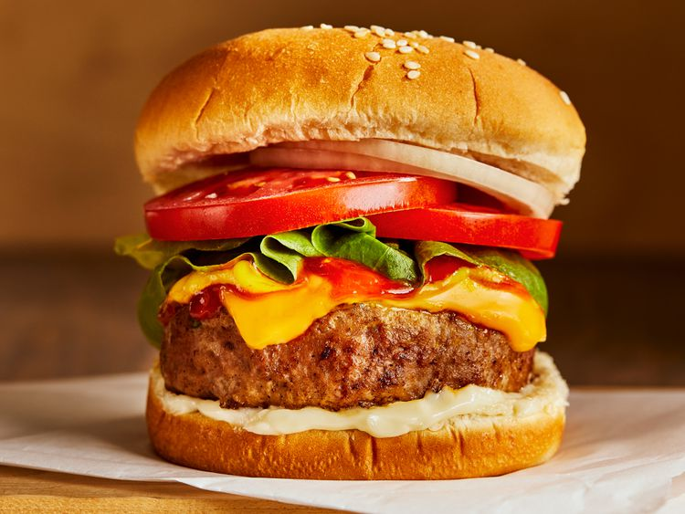

Turkey Burgers

If you don't like beef, we've got just the burger for you. These aren't your
plain old, dry turkey burgers. These Turk Burgs are packed with eggs and bread crumbs
to get it juicy and together. Follow along below.
Ingredients
- 3 pounds ground turkey
- ¼ cup seasoned bread crumbs
- ¼ cup finely diced onion
- 2 egg whites, lightly beaten
- ¼ cup chopped fresh parsley
- 1 clove garlic, peeled and minced
- 1 teaspoon salt
- ¼ teaspoon ground black pepper
Steps
- Gather all ingredients.
- Mix ground turkey, seasoned bread crumbs,
onion, egg whites, parsley, garlic, salt, and pepper together in a large bowl.
- Form into 12 patties.
- Cook the patties in a medium skillet over medium heat,
turning once, to an internal temperature of 180 degrees F (85 degrees C).
- Serve hot and enjoy!
Return to Recipes